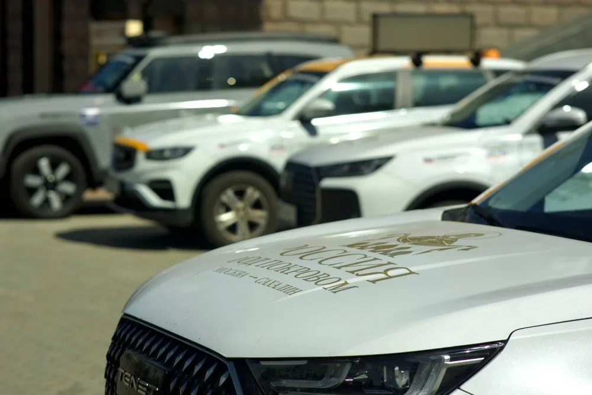
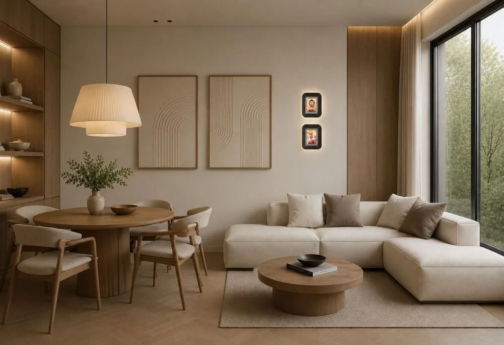
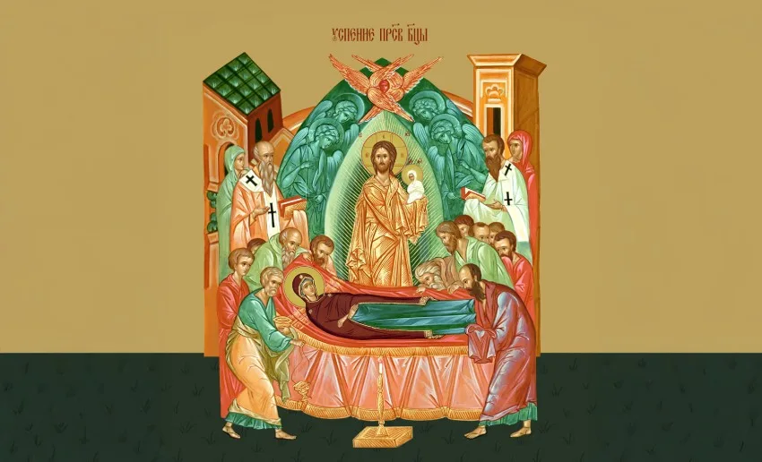
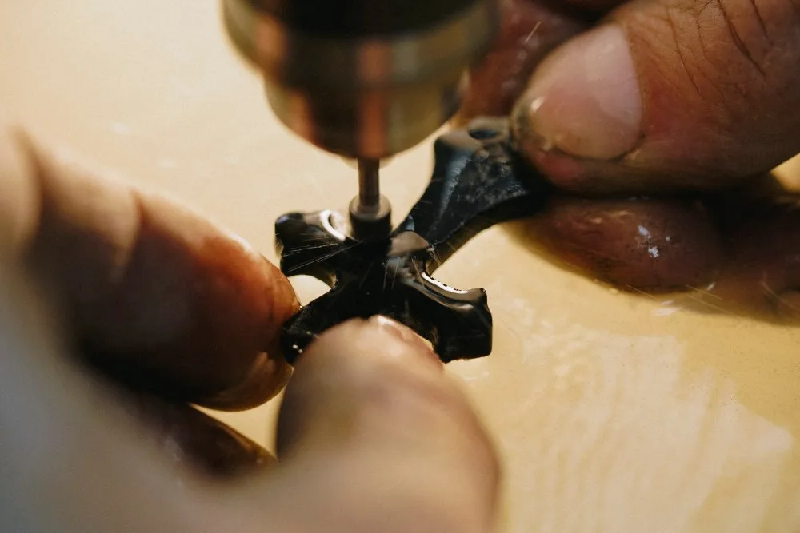
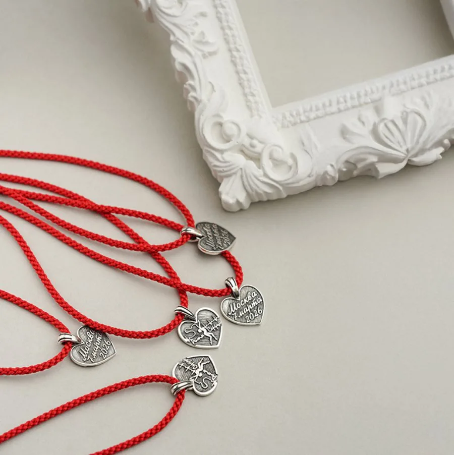
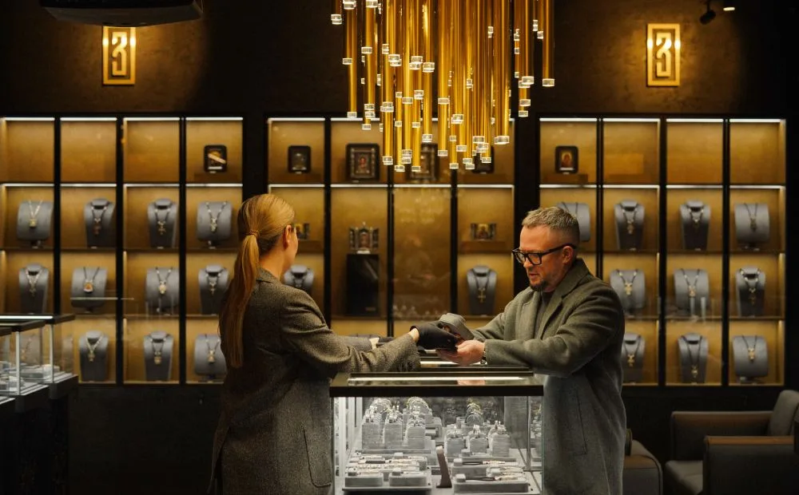
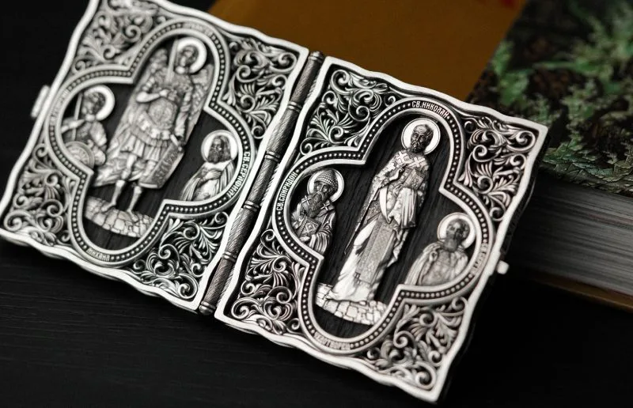
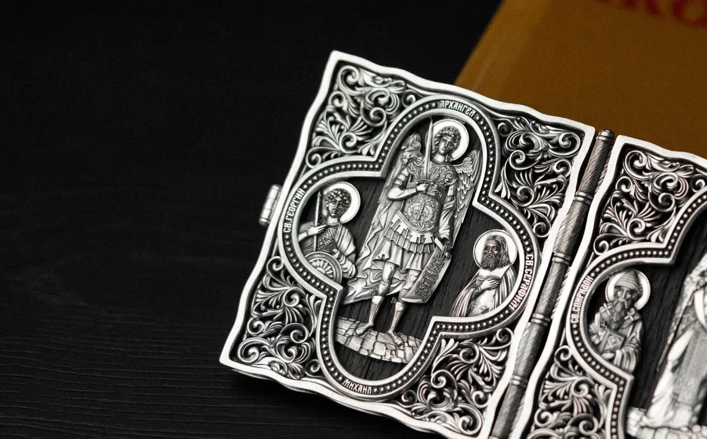

Журнал
Журнал ЗАВАРИН
Публикации ювелирного дома: традиции, праздники, материалы и новости. Тексты — zavarin.art/blog.

ЗАВАРИН – спонсор крестного хода-автопробега «Россия под Покровом»
Более 11 000 километров, 11 городов и 1 главная цель. Ювелирный дом ЗАВАРИН поддержал крестный ход-автопробег «Россия под Покровом».

Икона в доме: от красного угла до современности
Какие иконы должны быть в доме и как их правильно разместить? Рассказываем о старинной традиции и её жизни в современном интерьере.

Успение Пресвятой Богородицы – почему это праздник?
Как день, в который Церковь вспоминает смерть Богородицы, стал одним из двунадесятых праздников и что несёт он каждому верующему.

Изделия с цельным агатом: как мы работаем с природным камнем
За что агат так ценят ювелиры и как создавался уникальный цех огранки ЗАВАРИН — с комментарием Антона Заварина.

ЗАВАРИН стал спонсором турнира по художественной гимнастике «Ритм сердца»
Накануне 8 Марта ЗАВАРИН выступил спонсором открытого турнира по художественной гимнастике «Ритм сердца».

Открытие ювелирной галереи ЗАВАРИН в Москве
6 марта 2026 г. состоялось открытие первой ювелирной галереи ЗАВАРИН в Москве.

Святые покровители воинства: часть 2
Какие святые всегда были особенно близки русскому воинству и почему?

Святые покровители воинства
Какие святые всегда были особенно близки русскому воинству и почему? Рассказываем о небесных покровителях.
Со светского на православный: тренды 2026 в изделиях ЗАВАРИН
Свежие формы. Вечные смыслы. ЗАВАРИН — о главных ювелирных трендах 2026 года.